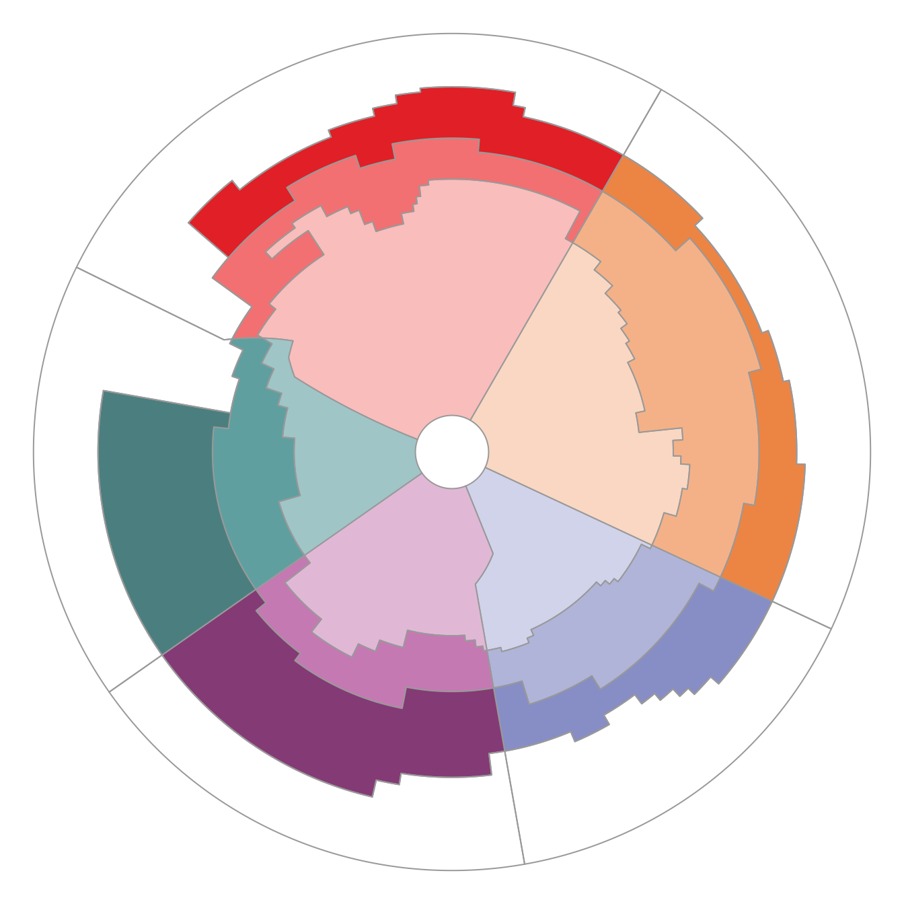

Simple feature collection with 20 features and 5 fields
Geometry type: POLYGON
Dimension: XY
Bounding box: xmin: -6381686 ymin: -6381694 xmax: 6381694 ymax: 6381694
Projected CRS: +proj=laea +lat_0=-90 +lon_0=0 +x_0=0 +y_0=0 +datum=WGS84 +units=m +no_defs
name label sector zone fill
1 AOA Antarctic Atlantic Atlantic Antarctic #F9BDBC
2 AOS Subantarctic Atlantic Atlantic Subantarctic #F27071
3 AON Northern Atlantic Atlantic Northern #E11F26
4 AOT Temperate Atlantic Atlantic <NA> <NA>
5 CIA Antarctic Central Indian CentralIndian Antarctic #F9D7C2
6 CIS Subantarctic Central Indian CentralIndian Subantarctic #F4B187
7 CIN Northern Central Indian CentralIndian Northern #EC8444
8 CIT Temperate Central Indian CentralIndian <NA> <NA>
9 EIA Antarctic East Indian EastIndian Antarctic #D1D3EA
10 EIS Subantarctic East Indian EastIndian Subantarctic #B0B4D9
11 EIN Northern East Indian EastIndian Northern #878DC5
12 EIT Temperate East Indian EastIndian <NA> <NA>
13 WPA Antarctic West Pacific WestPacific Antarctic #E0B8D6
14 WPS Subantarctic West Pacific WestPacific Subantarctic #C579B2
15 WPN Northern West Pacific WestPacific Northern #843A75
16 WPT Temperate West Pacific WestPacific <NA> <NA>
17 EPA Antarctic East Pacific EastPacific Antarctic #9FC5C7
18 EPS Subantarctic East Pacific EastPacific Subantarctic #609FA0
19 EPN Northern East Pacific EastPacific Northern #4B7E7F
20 EPT Temperate East Pacific EastPacific <NA> <NA>
geometry
1 POLYGON ((-2891647 1737477,...
2 POLYGON ((1842392 3191116, ...
3 POLYGON ((2613013 4525871, ...
4 POLYGON ((-3353009 1723416,...
5 POLYGON ((279139.2 483483.3...
6 POLYGON ((1842392 3191116, ...
7 POLYGON ((2294977 3975017, ...
8 POLYGON ((2613013 4525871, ...
9 POLYGON ((3048452 -1421517,...
10 POLYGON ((533521.3 -3025749...
11 POLYGON ((4093993 -1909060,...
12 POLYGON ((4882884 -2276926,...
13 POLYGON ((524717.5 -3027289...
14 POLYGON ((9312.405 -2801188...
15 POLYGON ((637964.6 -3618077...
16 POLYGON ((16836.49 -4961088...
17 POLYGON ((-457314.9 -320215...
18 POLYGON ((-2250033 -1575490...
19 POLYGON ((-2992183 -2095149...
20 POLYGON ((-4421564 -3096013...
Version 05 is in the package as released (measo_regions05 etc., 24 rows with the West Pacific regions in two pieces, and measo_names row-aligned with them); see the README.
The files on the Data page (one row per region) are in the package too:
f <-system.file("extdata/measo_regions06.parquet", package ="measoshapes")
Reading from a URL
No package installation is needed to read the published files. GDAL reads them directly from the URL.
FlatGeobuf and GeoJSON work the same way (change the file name), and are a good choice if your GDAL doesn’t have the Parquet driver (check "Parquet" %in% sf::st_drivers()$name).
Assigning regions to data
To find the region for longitude/latitude locations, transform them to the polar equal area projection and join with the polar regions:
lon lat name label sector zone fill
1 147.3 -50.2 EIN Northern East Indian EastIndian Northern #878DC5
2 100.5 -60.5 CIA Antarctic Central Indian CentralIndian Antarctic #F9D7C2
3 -10.5 -70.5 AOA Antarctic Atlantic Atlantic Antarctic #F9BDBC
4 -82.5 -45.5 EPN Northern East Pacific EastPacific Northern #4B7E7F
5 171.5 -65.5 WPA Antarctic West Pacific WestPacific Antarctic #E0B8D6
6 -175.5 -65.5 WPA Antarctic West Pacific WestPacific Antarctic #E0B8D6
The polar regions are densified to 0.2° from the longitude/latitude definition, so this agrees with the definition except for locations within a very short distance of a boundary.
For gridded data, the same applies: classify cell centres, or rasterize the polar regions onto your grid (e.g. terra::rasterize(terra::vect(regions), grid, field = "name")).
Maps
par(mar =rep(0, 4))plot(st_geometry(regions), col = regions$fill, border ="grey60")

Figure 1: Base graphics with the fill colours.
With ggplot2, use the colours as they are with scale_fill_identity():